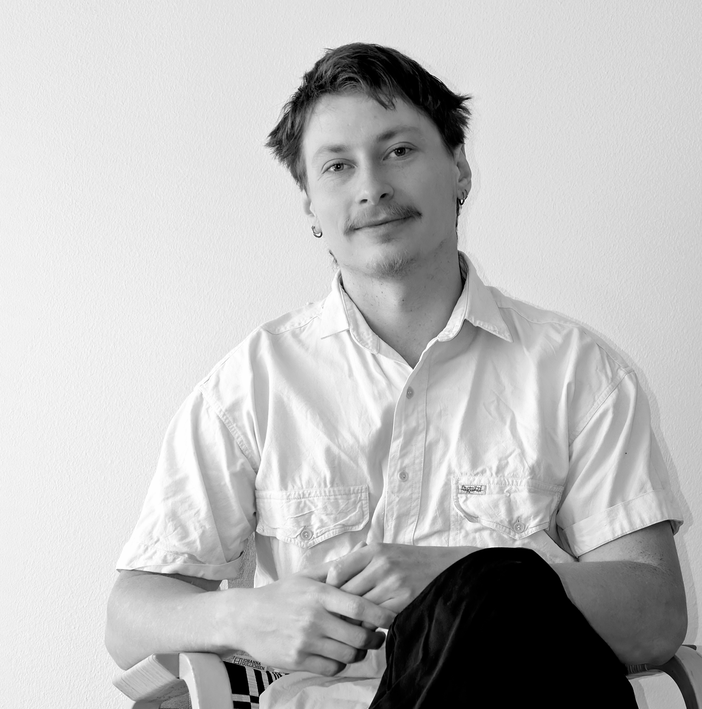

When something sparks my interest, I tend to immerse myself in it. I've always been curious about how things work and how they relate to the world around them. Architecture is a natural outlet for this curiosity, alongside my many interests beyond it. I'm a fifth-year architecture student at Aalto University. My path into architecture began at HEO, where I studied architecture and design. I also spent an exchange semester at EPFL in Switzerland, gaining invaluable experiences, friendships and fresh perspectives. I value the people around me and find collaboration and shared enthusiasm especially rewarding. I'm particularly drawn to architectural history, restoration and the processes that shape design and construction. I find it fascinating how old buildings embody knowledge that might otherwise be forgotten. I'm equally interested in the thoughtful use of resources, from reusing materials on site to reconsidering established building practices. For me, architecture offers an endless opportunity to learn, question conventions and contribute to a more considered built environment.